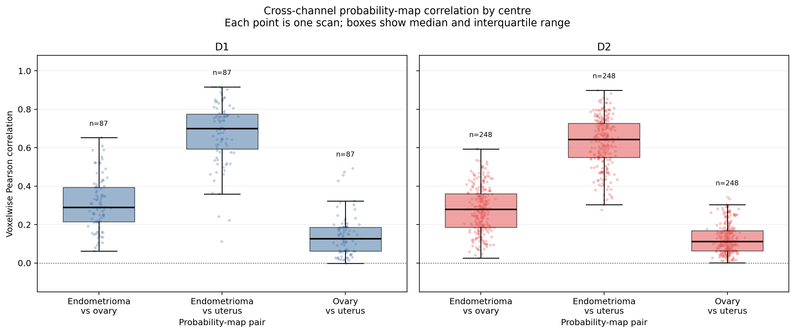
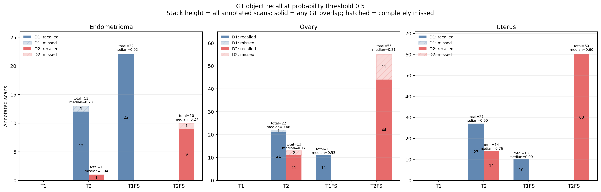
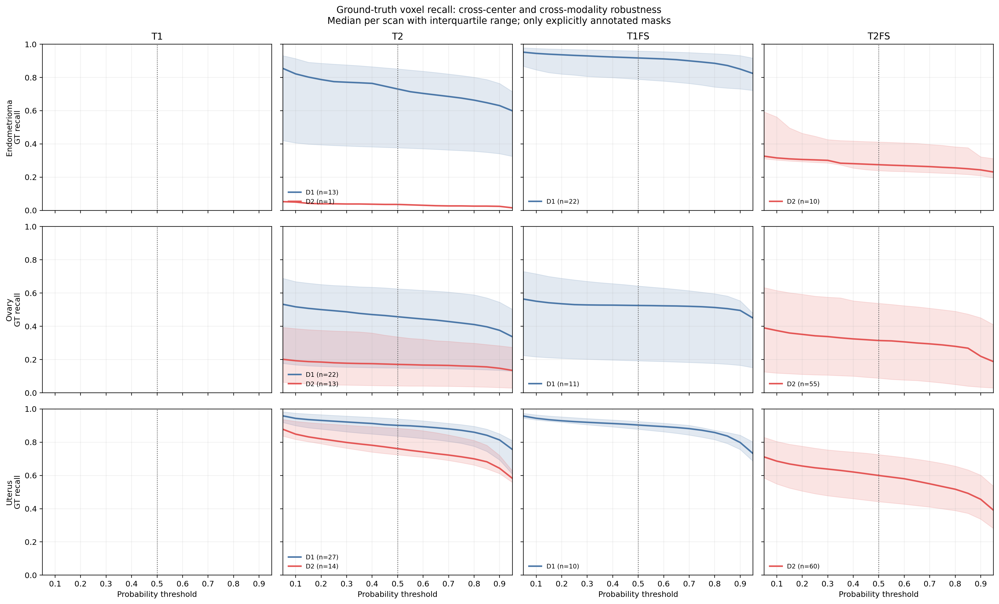

Endometriosis: Do NOT fully trust FM – Question it
Hierarchical anatomical reasoning and statistical rejection




Ground-truth recall audit
Operating threshold: 0.5. Median [IQR] across explicitly annotated scans. Missing domain–modality combinations are not interpreted as negatives.
| threshold | Class | Domain | Modality | Annotated scans | Recall @ 0.1 | Recall @ 0.5 | Recall @ 0.9 |
|---|---|---|---|---|---|---|---|
| endometrioma | D1 | T1FS | 22 | 0.945 [0.845, 0.974] | 0.917 [0.789, 0.959] | 0.850 [0.731, 0.931] | |
| endometrioma | D1 | T2 | 13 | 0.821 [0.406, 0.913] | 0.730 [0.377, 0.851] | 0.630 [0.341, 0.764] | |
| endometrioma | D2 | T2 | 1 | 0.050 [0.050, 0.050] | 0.036 [0.036, 0.036] | 0.024 [0.024, 0.024] | |
| endometrioma | D2 | T2FS | 10 | 0.316 [0.303, 0.562] | 0.275 [0.239, 0.412] | 0.244 [0.209, 0.322] | |
| ovary | D1 | T1FS | 11 | 0.551 [0.216, 0.716] | 0.525 [0.192, 0.642] | 0.496 [0.165, 0.554] | |
| ovary | D1 | T2 | 22 | 0.517 [0.168, 0.669] | 0.458 [0.149, 0.625] | 0.376 [0.135, 0.545] | |
| ovary | D2 | T2 | 13 | 0.193 [0.058, 0.386] | 0.171 [0.042, 0.336] | 0.147 [0.031, 0.282] | |
| ovary | D2 | T2FS | 55 | 0.374 [0.118, 0.615] | 0.314 [0.088, 0.538] | 0.219 [0.034, 0.451] | |
| uterus | D1 | T1FS | 10 | 0.944 [0.934, 0.964] | 0.903 [0.878, 0.924] | 0.798 [0.756, 0.842] | |
| uterus | D1 | T2 | 27 | 0.943 [0.900, 0.975] | 0.901 [0.836, 0.940] | 0.814 [0.693, 0.850] | |
| uterus | D2 | T2 | 14 | 0.849 [0.817, 0.925] | 0.761 [0.724, 0.884] | 0.643 [0.611, 0.720] | |
| uterus | D2 | T2FS | 60 | 0.686 [0.549, 0.804] | 0.600 [0.442, 0.725] | 0.456 [0.337, 0.602] |
| Scan | ID | Final | Reason | Stage 1 · Anatomical reasoning | Stage 2 · Inter-class rank statistics | Stage 3 · Intra-class equivalence | |||||||||||||||||||
|---|---|---|---|---|---|---|---|---|---|---|---|---|---|---|---|---|---|---|---|---|---|---|---|---|---|
| Pass | Path | Uterus repair | Morphology | Sphericity | Elongation | Uterus ΔS | Ovary ΔS | Ovary surface | Pass | q uterus | Effect uterus | q ovary | Effect ovary | q local | Effect local | Pass | Credible ref | Reference | Joint distance | q intra | Effect intra | ||||
D1-derived spatial priors
{
"uterus_ovary_distance_min_mm": 28.919339836476798,
"uterus_ovary_distance_max_mm": 80.34581863257115,
"uterus_ovary_distance_median_mm": 46.19857571182406,
"uterus_ovary_delta_r_min_mm": -56.95180047797167,
"uterus_ovary_delta_r_max_mm": 66.91039218775617,
"uterus_ovary_delta_a_min_mm": -77.9852523584235,
"uterus_ovary_delta_a_max_mm": 47.64691429716311,
"uterus_ovary_delta_s_min_mm": -27.761998570158642,
"uterus_ovary_delta_s_max_mm": 47.37463167263278,
"uterus_ovary_abs_delta_r_median_mm": 34.65748592725825,
"uterus_ovary_delta_a_median_mm": -7.553844614026232,
"uterus_ovary_delta_s_median_mm": 16.393947780241717,
"endometrioma_uterus_distance_min_mm": 22.431150256810803,
"endometrioma_uterus_distance_max_mm": 109.57919205495038,
"endometrioma_uterus_delta_r_min_mm": -84.65533937498755,
"endometrioma_uterus_delta_r_max_mm": 97.02145133341777,
"endometrioma_uterus_delta_a_min_mm": -69.35245146901153,
"endometrioma_uterus_delta_a_max_mm": 49.79166792078732,
"endometrioma_uterus_delta_s_min_mm": -66.63317747554899,
"endometrioma_uterus_delta_s_max_mm": 69.76285699013235,
"endometrioma_ovary_delta_r_min_mm": -117.46039331836204,
"endometrioma_ovary_delta_r_max_mm": 120.34719804485266,
"endometrioma_ovary_delta_a_min_mm": -37.72635979716814,
"endometrioma_ovary_delta_a_max_mm": 74.11768728035908,
"endometrioma_ovary_delta_s_min_mm": -100.06834794261658,
"endometrioma_ovary_delta_s_max_mm": 50.53902136721734,
"endometrioma_ovary_surface_max_mm": 30.0,
"endometrioma_volume_min_mm3": 20.0,
"endometrioma_volume_max_mm3": 496703.6787600856,
"endometrioma_sphericity_min": 0.05,
"endometrioma_sphericity_max": 1.0,
"endometrioma_elongation_min": 1.0,
"endometrioma_elongation_max": 20.0,
"endometrioma_superior_extent_min_mm": 1.3634546923905322,
"endometrioma_superior_extent_max_mm": 135.30446332200967,
"n_uterus_ovary_pairs": 35,
"n_endometrioma_uterus_pairs": 52,
"n_endometrioma_ovary_pairs": 51
}